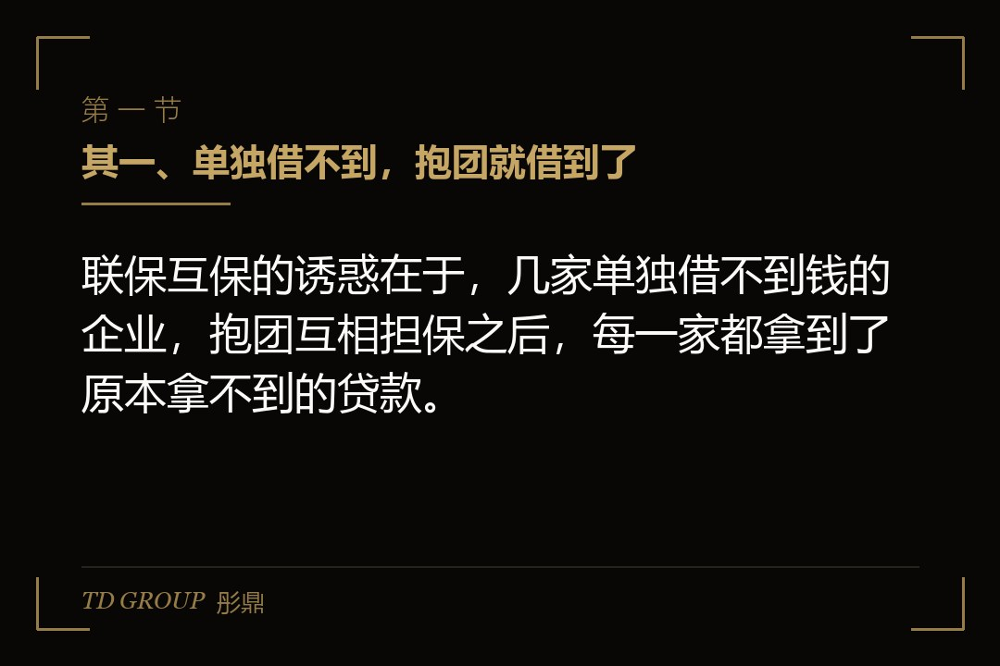
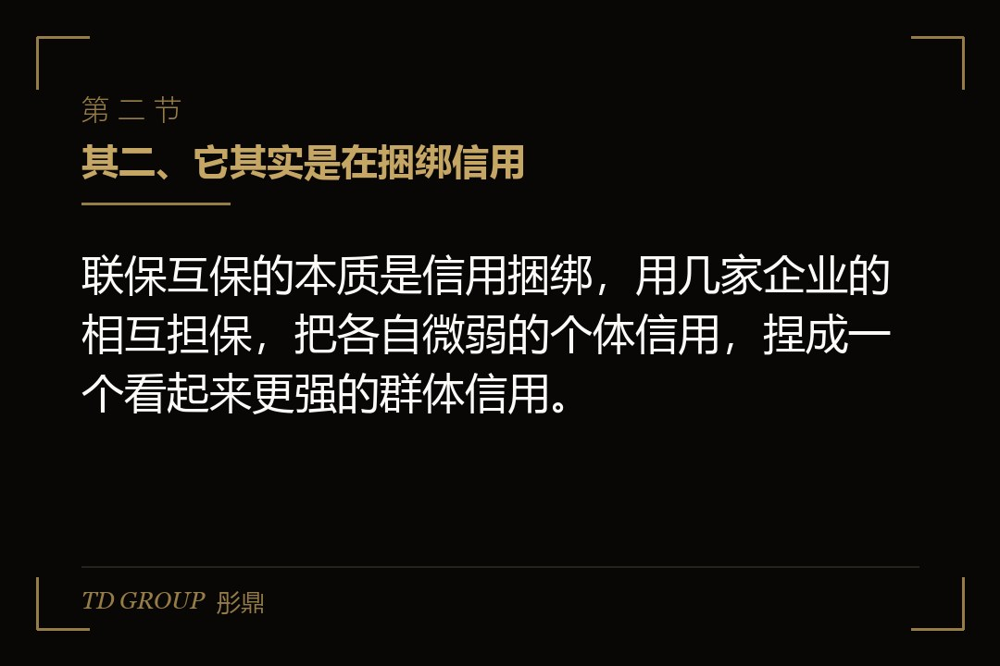
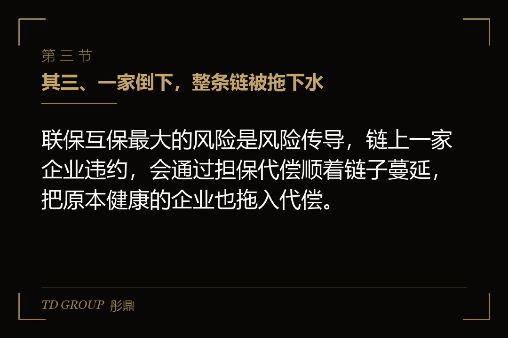

其一、单独借不到，抱团就借到了

结论先行：联保互保的诱惑在于，几家单独借不到钱的企业，抱团互相担保之后，每一家都拿到了原本拿不到的贷款。
假设有四五家做不同生意的小企业，有的做包装，有的做零部件，有的做贸易，规模都不大，固定资产也不多。单独去银行，每一家都被抵押物不足卡住，能拿到的额度很有限。
后来有人提议，几家企业组成一个互保小组，互相为对方的贷款做担保。银行一看，一家还不上，还有另外几家兜着，风险被分摊了，就愿意放款。于是每一家都拿到了贷款，看起来皆大欢喜，谁也没觉得自己背上了额外的负担。
这套做法曾经被当成缓解中小企业融资难的一把钥匙，也确实是那个阶段里，很多缺抵押物的企业能借到钱的现实路径，门槛低、见效快，表面上谁都不吃亏。但实践下来，它暴露出的问题远比它解决的问题更棘手：担保链一旦形成，就成了一张谁都想躲、又谁都拆不掉的网。后来的许多不良贷款、企业连环倒闭，根源都能追溯到一条松散的互保链上。
其二、它其实是在捆绑信用

结论先行：联保互保的本质是信用捆绑，用几家企业的相互担保，把各自微弱的个体信用，捏成一个看起来更强的群体信用。
打个比方，这就像几根细绳子，单独一根很容易断，但把它们绞在一起，看起来就粗壮了很多，能吊起更重的东西。问题是，绞在一起的绳子，只要有一根内部先断了，剩下的也会跟着松，而且你根本不知道是哪一根、什么时候断。
在这个安排里，每一家企业既是借款人，又是别人的担保人。你借到的钱，靠的是别人为你担保；而别人的贷款，也靠你为他担保。你们的信用被绑在了一起，一荣俱荣，一损俱损。
这种捆绑在顺境里看不出问题，大家都按时还款，谁也不用替谁还。可一旦经济下行，或者其中一家经营出问题，捆绑的风险就会集中爆发。
顺带说清楚联保和互保的差别。联保，往往是几家企业共同为一个借款主体做担保，责任是共同承担；互保，则是几家企业两两之间互相为对方担保，责任是交叉的、对等的。日常里这两个词经常混着用，但落到合同上，责任怎么分、谁先代偿、代偿后怎么追索，是有区别的。签之前，要把自己到底是共同担保人，还是互负交叉责任的担保人，这一点先看明白。
其三、一家倒下，整条链被拖下水

结论先行：联保互保最大的风险是风险传导，链上一家企业违约，会通过担保代偿顺着链子蔓延，把原本健康的企业也拖入代偿。
假设这个小组里有一家企业经营出了问题，贷款还不上了。银行会启动担保追偿，要求其他几家担保企业代为偿还。其他几家本来自己也有贷款要还，突然多出一笔代偿义务，现金流立刻吃紧，原本排好的经营计划全被打乱。
更糟的是连锁反应。一家被代偿拖累，它自己的贷款也可能还不上，于是它的担保人又要替它还。风险就像多米诺骨牌，一家一家地倒下去。原本经营健康的企业，仅仅因为给一家快倒的企业做了担保，就被迫背上代偿债务，甚至因此资金链断裂。
这正是联保互保最残酷的地方：它惩罚的往往不是经营最差的那家，而是经营正常、却被担保链连累的那几家。你越守信用、越按时还款，就越容易被人拉去担保，也就越容易在别人出事的时候被拖下水。
其四、顺境看不出，逆境全暴露
结论先行：联保互保的风险是顺周期放大的，经济好的时候大家都安全，经济一转向，问题就集中爆发、成片传导。
这套安排有一个隐蔽的时间特征。在经济上行、大家都赚钱的时候，还款没有压力，担保责任也不会被触发，互保看起来是一项稳妥的融资方式，甚至被当成成功经验推广。
可一旦经济转弱、行业下行，一批企业同时出现经营困难，互保链上的代偿就会集中触发。这时候你会发现，担保你的人和被你担保的人，处境都差不多，谁也救不了谁。原本分散的风险，在经济下行的同一时刻集体爆发，形成系统性的连锁违约。
所以判断互保风险，不能看顺境时的表现，要看它在最坏情况下的承受能力。顺境里风平浪静，恰恰是最容易让人放松警惕的时候。
也正因为这个顺周期放大、逆境集中爆发的特征，后来无论是监管的导向，还是银行的授信实践，都逐渐收紧了对联保互保的依赖，转而强调抵押物、现金流这些更实在的信用基础。这不是说互保被一棍子打死，而是说它从一个被普遍推崇的工具，变成了一个需要极度谨慎、严格评估的工具。企业现在再遇到这类安排，心态应该从「这是解药」转到「这是需要算清代价的选择」。
其五、接与拆，各有一条原则
结论先行：面对联保互保，接的时候要看清楚自己到底替别人背了多少，拆的时候要一条条把担保责任解绑，宁可慢，也不要继续往链子上加。
先讲接的原则。如果别人拉你进一个互保圈，你要做的头一件事，是算清楚自己签下去之后，最多可能替别人还多少钱。这个数不是纸上谈兵，而是最坏情况下你真实的或有负债。这个数一旦超过你自己的承受能力，这个圈就不该进。
再讲拆的原则。如果你已经在一条互保链上，想要脱身，关键是逐步把担保责任解绑。有的担保合同到期后可以不再续，有的可以通过协商换一个担保方式，有的需要把借款主体和担保责任一起处理。拆解要一条一条来，急不得，也断不得，因为突然抽身可能触发别的违约。
还有一句要记住：不要在没看清自己负债边界的情况下，为了帮朋友、帮熟人就顺手签一份担保。情面上的担保，最后往往变成账面上的代偿。
这里还要补一个法律上的关键点：担保责任往往不是可以挑挑拣拣的，尤其是连带责任保证。一旦你签的是连带责任保证，债权人可以跳过债务人，直接找你要钱，你没有「先让债务人还」的抗辩余地。很多人签字的时候以为只是「帮个忙」，等到被直接追偿的时候才明白自己背的是一笔实打实的债。所以签之前，一定要分清自己签的是一般保证还是连带责任保证，这两个字的差别，决定了出事后你能不能先躲一躲。
其六、做之前先核清四件事
结论先行：面对联保互保安排，先把担保上限、链上主体、传导路径与退出机制这四件事核清，再决定进不进、怎么出。
其一，担保上限是多少。把自己签下去的所有担保责任加总，算出最坏情况下最多要代偿多少钱，这个数必须在自己的承受范围之内，而且要当成一笔随时可能发生的真实负债来看。
其二，链上有谁。把互保链上的每一家企业、它们的经营状况和还款能力，尽量摸清楚。你担保的人越弱，你的风险就越大，越不能只看交情不看家底。
其三，传导路径是什么。想清楚一旦某一家违约，代偿会怎么顺着链子走到你这里，你要替谁还、还多少、有没有追索的可能，这条路径想不清楚，就等于蒙着眼签字。
其四，退出机制在不在。看担保合同里有没有退出、变更担保方式的安排，没有明确退出路径的互保，等于把自己的信用无限期地、不可撤销地押在了别人身上。
这四件事想清楚，联保互保才是可评估、可控的融资安排；没想清楚就签，它可能在你最没准备的时候，把一个你根本不认识的风险，通过一纸担保塞进你的资产负债表，让你为别人的生意买单。
本文为知识梳理，不构成专业意见。联保互保涉及的担保责任范围、代偿顺序、追偿权利与退出安排，均以正式担保合同及现行司法口径为准，建议由律师逐条核过之后再签。